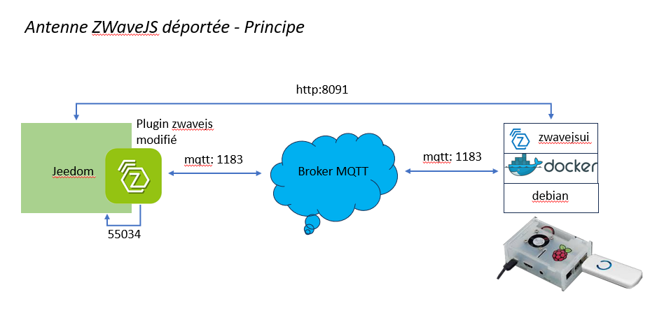
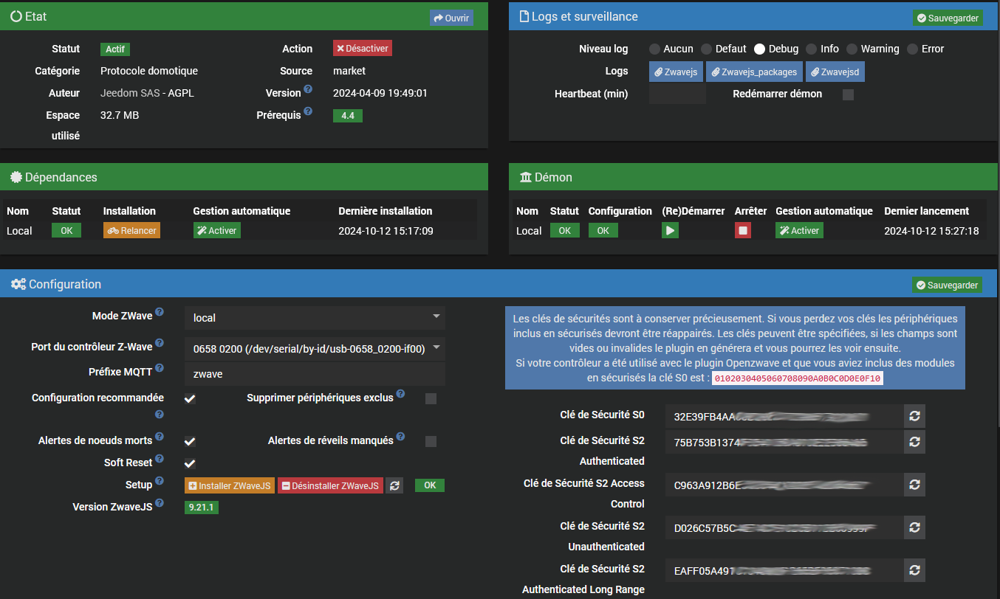
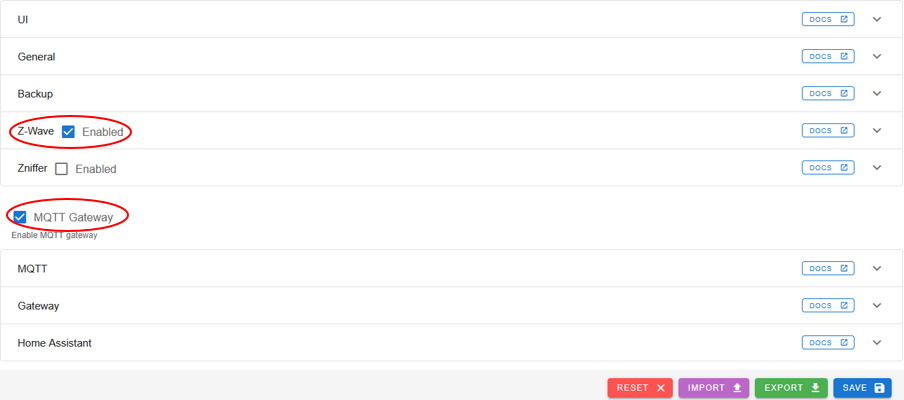
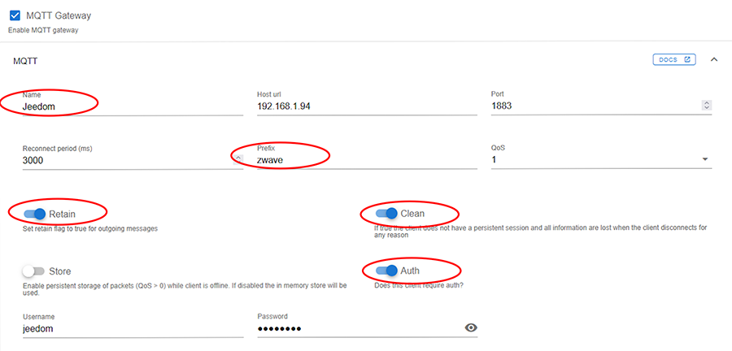
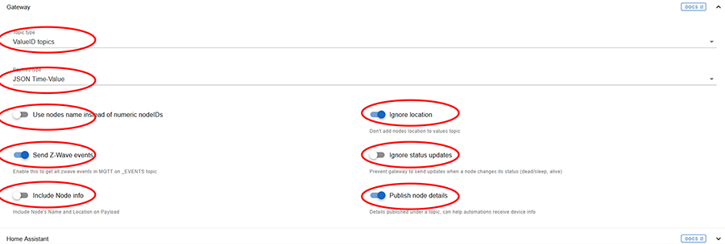
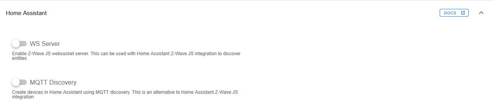
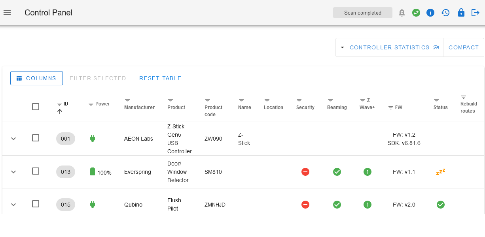
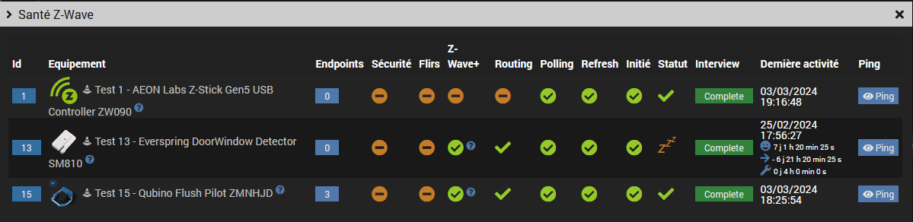
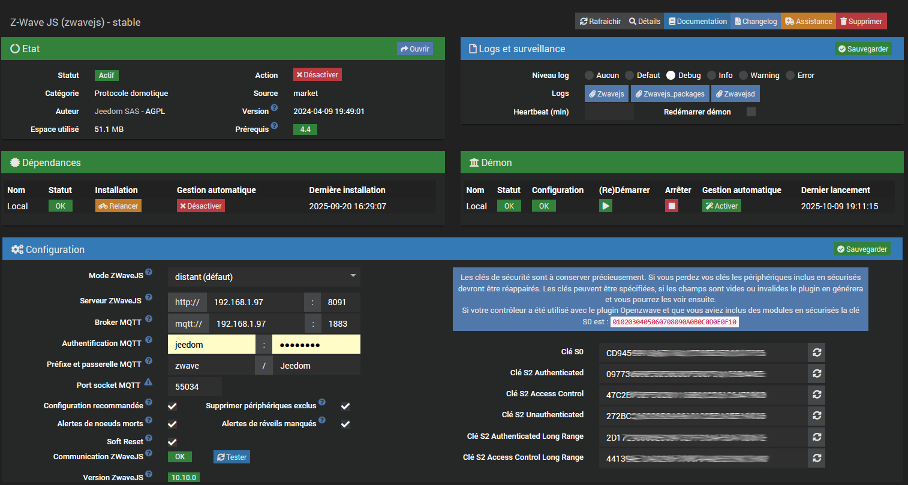

Version améliorée du plugin officiel zwavejs avec option antenne ZWaveJS distante ou locale.
Le plugin a été testé avec une antenne docker mais il doit également fonctionner avec un container lxc ou une install yarn.
Il ne nécessite plus le plugin mqtt2.
Ce fork du plugin officiel permet de dissocier l'antenne avec la lib zwavejsui de jeedom avec son plugin, cf le schéma plus bas.
L'antenne ZWaveJS comme le broker peuvent être déployés sur n'importe quelle machine, VM ou docker, local ou pas.
L'installation se fait par défaut en mode distant mais le mode local existe toujours pour des raisons de compatibilité.

$ cd /var/www/html/plugins
$ sudo git clone https://github.com/lxrootard/zwavejs.git
$ sudo chown -R www-data:www-data zwavejs
Attention l'installation des dépendances n'installe plus la librairie zwave-js-ui, il faut utiliser le bouton ìnstaller ZwaveJS.
La version zwave-js-ui qui sera installée et le préfixe MQTT par défaut se trouvent dans le fichier core/config/zwavejs.config.ini
L'installation se lance en tâche de fond et prend un certain temps. Vous pouvez vérifier le statut avec le bouton rafraichir
L'avancement de l'installation se trouve dans le fichier de log zwavejs_packages.
Le voyant doit être vert et à OK et la version doit s'afficher en dessous une fois l'installation terminée.

Le fonctionnement est identique à celui du plugin officiel. Pour plus d'infos voir la doc du plugin ZWaveJS
Ce mode est réservé aux utilisateurs expérimentés sachant utiliser la ligne de commande. Le déploiement du docker distant est à effectuer manuellement.
Procédure à suivre si vous avez déjà le plugin officiel zwavejs et que vous souhaitez déporter l'antenne en gardant vos settings Jeedom.
Copier et extraire l'archive générée data/remote/docker_config.tar.gz dans un répertoire local sur la machine distante ex:
remote$ sudo mkdir -p /root/store/zwavejs
remote$ cd /root/store/zwavejs
remote$ sudo tar xvfz /tmp/docker_config.tar.gz
Vous devez obtenir l'arborescence suivante sur la machine distante:
/root/store/zwavejs/config.json
/root/store/zwavejs/config/
Optionnel: copier et utiliser le script resources/zwavejs sur la machine distante pour gérer le container
Procédure à suivre si vous voulez vous connecter à une antenne existante préalablement déployée.
Modifiez le paramétrage de l'antenne via l'interface zwavejsui > Settings avec les valeurs suivantes:




Attention! Les settings en rouge sont ceux qui sont attendus par le plugin, sans changement ca ne fonctionnera pas.
Le préfixe et le nom de la gateway MQTT peuvent être changés dans la page de configuration du plugin: zwave et Jeedom par défaut.
Si elle n'est pas déjà présente installer l'image zwave-js-ui sur le docker distant:
remote$ sudo docker pull zwavejs/zwave-js-ui
ou installation + démarrage du container:
remote$ sudo zwavejs start
remote$ sudo zwavejs
usage: zwavejs {start|stop|restart|status}
Si vous utilisez un répertoire local différent de /root/store/zwavejs modifiez le dans le script
Connectez-vous sur http://remote-ip:8091
Au bout de quelques secondes le driver doit passer à Connected (icône rond vert) et le statut à Scan completed

Mettez à jour le paramétrage du plugin, cf section paramétrage plus bas.
Vous pouvez maintenant démarrer votre deamon Jeedom puis vérifier que les infos remontent:

Page de configuration:
zwave et Jeedom. Tester: vert si le service distant est démarré et disponibleVérifiez la communication en cliquant sur le bouton Tester
Le voyant communication doit passer au vert:

Note: La version se mettra à jour après démarrage du deamon
Le voyant communication est NOK le démon ne démarre pas
Commencez par vérifier si l'antenne fonctionne, cf section Vérification du service ZWaveJS
Vérifiez également les adresses IP et ports utilisés pour le broker et l'administration de l'image zwavejsui.
Si vous avez installé avec l'option2 vérifiez que vous avez bien copié l'ensemble des paramètres présents dans l'IHM d'administration de l'image vers celle de jeedom.
Le voyant communication est OK mais les commandes ne fonctionnent pas
Vérifiez que les topics sont identiques notamment pour le sortant (pas de contrôle automatique).
Si vous avez installé avec l'option1 vous devez retouver votre paramétrage dans l'IHM de l'image, si vous avez pris l'option2 il faut vérifier coté Jeedom.
Si ca ne suffit pas comparez les 2 fichiers de configuration zwavejs/data/store/settings.json et /root/store/zwavejs/config.json